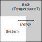

<script src="plot_mcmcExamples.js"> </script>
<script src="plot_2dExamples.js"></script>

<section>
  <section class="center">
    <h1>Introduction</h1>
  </section>
  
  <section>
    <h2>Bayesian inference</h2>

    <ul>
      <li>Bayesian inference is enabled by the Bayesian interpretation of probabilities:
        <ul>
          <li class="fragment">Probabilities are just as applicable to hypotheses as they are to data.</li>
          <li class="fragment">Inference of models and/or model parameters can be conducted using the standard calculus of probabilities (sum rule, product rule, etc).</li>
      </ul></li>
      <li class="fragment">In contrast, sampling theory approaches assign probabilities only to data:
        <ul>
          <li class="fragment">Inference of models and/or parameters is a distinct procedure.
        </ul>
      </li>
  </section>

  <section>
    <h2>The Problem</h2>

    <p>Suppose we have a vector $\vec{d}$ representing some collected data.  Assuming a model $M$, what do the data tell us about the parameters $\vec{\theta}_M$ of this model?</p>

    <p class="fragment">The Bayesian solution is simple to derive and tremendously intuitive:</p>

    <div class="fragment">
      $$P(\vec{\theta}_M|\vec{d},M) = \frac{P(\vec{d}|\vec{\theta}_M,M)P(\vec{\theta}_M)}{P(\vec{d}|M)}$$
    </div>

    <p class="fragment">For models with large parameter space volumes,
    actually <i>evaluating</i> this probability for a particular
    $\vec{\theta}_M$ is HARD.</p>

    <div class="fragment">
      $$P(\vec{d}|M)=\sum_{\vec{\theta}_M} P(\vec{d}|\vec{\theta}_M,M)P(\vec{\theta}_M|M)$$
    </div>
  </section>

  <section>
    <h2>The Problem (Continued)</h2>

    <div class="figure">
    
    <div class="cite" style="text-align:right">Idea due to MacKay, 2003</div>
    </div>
  </section>

  <section>
    <h2>A practical example from phylogenetics</h2>

    <p>The posterior probability for a particular time tree $T$ given a multiple sequence alignment $A$ and a neutral substitution model and a coalescent prior on tree space is</p>
    $$P(T,\mu,\theta|A) = \frac{P(A|T,\mu)P(T|\theta)P(\mu,\theta)}{P(A)}$$
    <p class="fragment">where $\mu$ and $\theta$ are substitution model and tree prior parameters.</p>

    <p class="fragment">How difficult is it to compute the denominator?</p>
    <div class="fragment">
      $$P(A)=\sum_{T,\mu,\theta}P(A|T,\mu)P(T|\theta)P(\mu,\theta)$$
    </div>
  </section>

  <section>
    <h2>How big is tree space?</h2>

    <p>The number $N$ of distinct labelled rooted tree topologies
      grows rapidly with the number $m$ of leaves
      (i.e. sequences):</p>

    $$N_m = \frac{(2m-3)!}{2^{m-2}(m-2)!}$$

    <div id="treecount" class="figure fragment">
      <script src="plot_treecount.js"></script>
    </div>
  </section>

  <section>
    <h2>Computational solutions to the normalization problem</h2>

    <ol class="spaced">
      <li class="fragment">Use <b>brute-force enumeration</b> all possible states:
        $$\sum_{\vec{\theta}_M}P(\vec{d}|\vec{\theta}_M,M)P(\vec{\theta}_M|M)$$
        <ul><li class="fragment">Only computationally feasible for relatively small problems.</li></ul>
      </li>
      <li class="fragment">Use a <b>variational approach</b> (AKA "variational Bayes"):<br>
        find $Q(\vec{\theta}_M)$ minimizing $\sum_{\vec{\theta}_M}Q(\vec{\theta}_M)\log\frac{Q(\vec{\theta}_M)}{P(\vec{\theta}_M|\vec{d},M)}$.
        <ul><li class="fragment">Requires a parametric ansatz for the posterior.  Not always easy to find, particularly in "interesting" state spaces such as tree space.</li></ul>
        </li>
    </ol>

  </section>

</section>

<section>
  <section class="center">
    <h1>The MCMC Algorithm</h1>
  </section>

  <section>
    <h2>Monte Carlo Methods</h2>

    <ul>
      <li>Broad class of methods which use stochastic algorithms to mathematical problems.</li>
      <li class="fragment">A large sub-class of these methods are targeted at the numerical solution of analytically intractable integrals:
        \begin{align}
        I &= \int_{\vec{x}\in\mathcal{V}} f(\vec{x})p(\vec{x})\\
          &= E_p[f(\vec{x})]
        \end{align}</li>
      <li class="fragment">By the law of large numbers:
        $$I = \lim_{N\rightarrow\infty} \frac{1}{N}\sum_{i=1}^N f(\vec{x}^{(i)})$$
        where $\vec{x}^{(i)}$ are draws from the distribution $p(\vec{x})$.</li>
    </ul>
  </section>

  <section>
    <h2>Monte Carlo Methods (Continued)</h2>

    <div class="figure" style="display:inline-block;width:50%">
      
      <div class="cite" style="text-align:right">Wikipedia</div>
    </div>
    <p>Here $\mathcal{V}=[0,1]^2$, $p(\vec{x})=1$ and $f(\vec{x})=I(|\vec{x}|^2<1)$.</p>
  </section>

  <section>
    <h2>Importance Sampling</h2>

    <ul>
      <li>What happens if we can't sample directly from $p(\vec{x})$?</li>
      <li class="fragment">Solution: suppose we have a function $Q(\vec{x})$ also defined on $\mathcal{V}$ from which we can easily generate samples:
        <div class="figure" style="text-align:center">
          
      </div></li>
      <li class="fragment">We can then use
        $$I=\int_{\vec{x}\in\mathcal{V}}f(\vec{x})\frac{p(\vec{x})}{q(\vec{x})}q(\vec{x}) = E_q\left[f(\vec{x})\frac{p(\vec{x})}{q(\vec{x})}\right]$$</li>

      <li style="margin-top:1.0em" class="fragment">The factor $p(\vec{x}^{(i)})/q(\vec{x}^{(i)})$ is the <b>weight</b> of sample $\vec{x}^{(i)}$.
    </ul>
  </section>

  <section>
    <h2>Importance Sampling in a Bayesian context</h2>

    <ul>
      <li>Importance sampling is a very general and useful idea with many applications in Bayesian statistics.</li>
      <li class="fragment">A very na&iuml;ve application would be the computation of the normalization factor in Bayes theorem:
        $$P(\vec{d}|M)=\lim_{N\rightarrow\infty}\frac{1}{N}\sum_{i=1}^{N}P(\vec{d}|\vec{\theta}_M^{(i)})$$
        where $\vec{\theta}_M^{(i)}\sim P(\vec{\theta}_M|M)$.</li>
      <li class="fragment">Similarly, one could compute expectations of parameters under the posterior.</li>
      <li class="fragment">Note that the equation above still holds if unbiased noise is added to the likelihood.</li>
    </ul>
  </section>

  <section>
    <h2>Approximate Bayesian Computation</h2>

    <ul>
      <li>Suppose we can't even evaluate the likelihood $P(\vec{d}|\vec{\theta}_M,M)$. What then?</li>
      <li class="fragment">An example from population genetics might be the probability of a sequence alignment $A$ given some population parameters $\phi=(N(t), \rho, \ldots)$. This probability $P(A|\phi)$ is difficult to compute as it requires summing over a large number of latent variables (including the sampled phylogenetic tree/network).</li>
      <li class="fragment">ABC: Replace the likelihood with a <b>cost function</b> depending
      on the difference between summary statistics evaluated on data
      $\vec{d}_s$ simulated under the $M$ from parameters
      $\vec{\theta}_M$ and the same summaries evaluate using the observed
      data $\vec{d}$.</li>

      <li class="fragment">While this method seems less than rigorous, there are systematic ways of applying it.</li>
      </ul>
  </section>
  
  <section>
    <h2>Markov chain Monte Carlo methods</h2>

    <ul>
      <li>Until now we have assumed each sample $\vec{x}^{(i)}$ is statistically independent.</li>
      <li class="fragment">Markov chain Monte Carlo methods instead produce a sequence
        of correlated samples
        $\vec{x}^{(1)}, \vec{x}^{(2)},\ldots,\vec{x}^{(N)}$,
        where each element is drawn from a distribution depending only
      on the previous element:
        $$\vec{x}^{(i+1)} \sim Q(\vec{x}'|\vec{x}^{(i)})$$</li>
      <li class="fragment">Allows samples to adapt to shape of distribution:
        <div class="figure" style="text-align:center">
          
        </div>
      </li>
    </ul>
  </section>

  <section>
    <h2>The Gibbs sampler</h2>

    <ul>
      <li>To be useful, the Markov chain must be ergodic in the following sense:
        $$\lim_{N\rightarrow\infty}\frac{1}{N}\sum_{i=1}^{N}f(\vec{x}^{(i)})=\int_{\vec{x}\in\mathcal{V}} f(\vec{x})p(\vec{x})$$</li>
      <li class="fragment">That is, the stationary distribution of the chain must match $p(\vec{x})$. Thus, the transition probabilities must be chosen so that they do not perturb the stationary distribution.</li>
      <li class="fragment">One way to achieve this is to use a sequence of transition functions which sample individual elements of the state vector from the conditional distributions $p(x_k|\vec{x}_{-k})$.</li>
      <li class="fragment">This is possible only when these conditional probabilities are known.</li>
    </ul>
  </section>

  <section>
    <h2>Metropolis-Hastings sampling</h2>

    <ul>
      <li>Suppose instead that we have the following transition probability:
        $$Q(\vec{x}'|\vec{x})=\alpha(\vec{x}',\vec{x})q(\vec{x}'|\vec{x}) + \delta(\vec{x}'-\vec{x})(1-\int_{\vec{y}\in\mathcal{V}}\alpha(\vec{y},\vec{x})q(\vec{y}|\vec{x}))$$
      </li>
      <li class="fragment">Here $q(\vec{x}'|\vec{x})$ is an arbitrary transition probability distribution (as long as ergodicity is satisfiable) and $\alpha(\vec{x}',\vec{x})$ is the <i>acceptance probability</i>.</li>
      <li class="fragment">Assuming that the stationary distribution of the chain satisfies detailed balance allows us to write
        $$p(\vec{x})Q(\vec{x}'|\vec{x}) = p(\vec{x}')Q(\vec{x}|\vec{x}')$$</li>
    </ul>
  </section>

  <section>
    <h2>Metropolis-Hastings sampling (continued)</h2>
    <ul>
      <li>From this it is straight-forward to identify the following solution for $\alpha$:

        $$\alpha(\vec{x}',\vec{x})=1\wedge\frac{p(\vec{x}')}{p(\vec{x})}\cdot\frac{q(\vec{x}|\vec{x}')}{q(\vec{x}'|\vec{x})}$$
      </li>
      <li class="fragment">The ratio $q(\vec{x}|\vec{x}')/q(\vec{x}'|\vec{x})$ is known
        as the Hastings ratio, and accounts for asymmetry in the
        proposal distribution.</li>
      <li class="fragment">This isn't the only possibility for $\alpha$:
        <ul>
          <li class="fragment">It's possible to find Markov chains with the
          transition probability given that have $p(\vec{x})$ as a
          stationary distribution but which violate detailed
          balance.</li>
          <li class="fragment">It's also possible to find $\alpha$ such that both
          $\alpha(\vec{x}',\vec{x})$ and $\alpha(\vec{x},\vec{x}')$ are
          $<1$: although this would be silly. (Why?)</li>
        </ul>
      </li>
    </ul>
  </section>

  <section>
    <h2>The MH algorithm</h2>

    The complete (yet simple!) MH algorithm is as follows:

    <blockquote>

      <ol class="spaced">
        <li class="fragment">Set $\vec{x}$ to an arbitrary initial state.</li>
        <li class="fragment">Sample $\vec{x}'$ from a proposal distribution $q(\vec{x'}|\vec{x})$</li>
        <li class="fragment">Evaluate the acceptance probability $\alpha(\vec{x}',\vec{x})$</li>
        <li class="fragment">Sample $u\sim\text{Unif}(0,1)$.</li>
        <li class="fragment">If $u&lt;\alpha(\vec{x}',\vec{x})$ then set $\vec{x}'\leftarrow\vec{x}$.</li>
        <li class="fragment">Log $\vec{x}$ to file.</li>
        <li class="fragment">Go to 2 (until the heat death of the universe).</li>
      </ol>
    </blockquote>
    
  </section>

</section>
<section>
  <section class="center">
    <h1>MCMC in practice</h1>
  </section>

  <section>
    <h2>Implementation example</h2>

    <p>Suppose we want to sample from the following posterior for a single variable $x$:</p>

    <div id="targetDensity"> </div>

    <p>Use a simple proposal distribution:</p>
    $$q_w(x'|x) = \begin{cases}
    1/w & x-\frac{w}{2} &lt; x' &lt; x+\frac{w}{2}\\
    0 & \text{otherwise}
    \end{cases}$$
  </section>

  <section>
    <h2>Implementation example</h2>

    <div id="mcmcTrace" style="width:100%"> </div>
    <div style="text-align:right;font-size:0.5em">
      <a href="#" onclick="generateTraces(); return false;">Regenerate</a>
    </div>
  </section>

   <section>
    <h2>Implementation example</h2>

    <div id="mcmcDensity" style="width:100%"> </div>
    <div style="text-align:right;font-size:0.5em;margin-top:-1em">
      <a href="#" onclick="generateTraces(); return false;">Regenerate</a>
    </div>
  </section>
  
  <section>
    <h2>Implementation example</h2>

    <div style="font-size:0.5em;text-align:left">$w=1$:</div>
    <div>
      <div style="display:inline-block;width:70%" id="mcmcTrace_w1"></div>
      <div style="display:inline-block;width:20%" id="mcmcDensity_w1"></div>
    </div>

    <div class="fragment">
    <div style="font-size:0.5em;text-align:left">$w=3$:</div>
    <div>
      <div style="display:inline-block;width:70%" id="mcmcTrace_w2"></div>
      <div style="display:inline-block;width:20%" id="mcmcDensity_w2"></div>
    </div>
    </div>

    <div class="fragment">
    <div style="font-size:0.5em;text-align:left">$w=5$:</div>
    <div>
      <div style="display:inline-block;width:70%" id="mcmcTrace_w3"></div>
      <div style="display:inline-block;width:20%" id="mcmcDensity_w3"></div>
    </div>
    </div>
    <div style="text-align:right;font-size:0.5em;margin-top:-1em">
      <a href="#" onclick="generateTraces(); return false;">Regenerate</a>
    </div>
  </section>

  <section>
    <h2>How do we assess convergence?</h2>

    <p>The easiest approach is simply to run multiple independent
    chains, each initialized from a unique starting point.</p>

    
    <div style="width:50%;">
    <ul>
      <li class="fragment">Chains can be run in parallel.</li>
      <li class="fragment">Resulting sample distributions can be compared using (for example) Q-Q plots.</li>
      <li class="fragment">Once convergence is attained, combining the results of
        multiple chains is perfectly acceptable.</li>
      </ul>
    </div>
  </section>

  <section>
    <h2>How do we assess mixing?</h2>

   <p>The key to assessing mixing is the autocorrelation function of the chain states:</p>

    $$\widehat{ACF}(l) = \frac{\sum_i x_i x_{i-l}}{\left(\sum_i x_i\right)^2}$$

    

  </section>

  <section>
    <h2>Assessing Mixing (continued)</h2>

    <p>The lag required for this function to decay to within the
      vicinity of 0 is the gap between effectively independent
      samples, $\tau$.</p>

    <p class="fragment">If $N$ is the total number of MCMC samples, we then define
    $$N_{\text{eff}}=\frac{N}{\tau}$$
    to be the <b>effective sample size</b> (ESS).</p>

    <p class="fragment">The ESS is a rough <i>estimate</i> of the number of actual
      samples a chain has generated.</p>

    <blockquote class="fragment">You should really only
      consider the order of magnitude of the ESS.</blockquote>
  </section>

  <section>
    <h2>Multivariate target distributions</h2>

    <ul>
      <li>MCMC is usually applied to posteriors with large numbers of dimensions.</li>
      <li class="fragment">This is precisely the regime in which MCMC shines.</li>
      <li class="fragment">A typical phylogenetic analysis (as we'll see later) may contain many hundreds
        of distinct parameters.</li>
      <li class="fragment">How do we develop algorithms to sample from posteriors over
      these parameter spaces?</li>
    </ul>
  </section>

  <section>
    <h2>Complex proposals</h2>

    <p>The usual approach is to decompose the proposal function $q(\vec{x}'|\vec{x})$ in terms of a large number of simpler proposals:
      $$q(\vec{x}'|\vec{x})=\sum_j w_j q_j(\vec{x}'|\vec{x})$$</p>

    <ul>
      <li class="fragment">Individual proposal functions $q_j(\vec{x}'|\vec{x})$ are
      sometimes called "operators", and the $w_j$ are called
      "weights".</li>
      <li class="fragment">Individual operators are often constructed to be reversible:
      i.e. maintain detailed balance.</li>
      <li class="fragment">However, individual operators are usually incapable of
      producing an ergodic chain on their own. (I.e. they may not be
      capable of exploring the entire support of the posterior.)</li>
    </ul>

  </section>

  <section>
    <h2>Example</h2>

    <div>
    <div id="targetDensity2d" style="margin:auto;width:70%;margin-bottom:0"></div>
    </div>

    <div class="fragment">
    <p style="margin-top:0em">These proposal operators are sufficient for ergodicity:</p>
      $q_1(\vec{x'}|\vec{x})=\delta(x_2'-x_2)g(x_1'|x_1)$, 
      $q_2(\vec{x'}|\vec{x})=\delta(x_1'-x_1)g(x_2'|x_2)$
    <p>where $g(x'|x)$ is the PDF for $\text{Unif}(x-w/2,x+w/2)$</p>
  </section>

  <section>
    <h2>Example (continued)</h2>

    <div id="mcmcTrace2dFirstTry" style="margin:auto;width:80%"></div>
    <div style="text-align:right;font-size:0.5em;margin-top:-1em">
      <a href="#" onclick="generate2dTraces(); return false;">Regenerate</a>
    </div>
  </section>

  <section>
    <h2>Correlated variables</h2>

    <ul>
      <li>Chain is mixing slowly because of strong correlations between the two
        parameters.</li>
      <li class="fragment">Solution is to update both parameters simultaneously.</li>
      <li class="fragment">Anticipating correlations between parameters is a key skill in designing efficient MCMC algorithms.</li>
      <li class="fragment">In the Bayesian context, this often requires careful examination of the likelihood: non-identifiability is a source of such correlations.</li>
    </ul>
    <p class="fragment">Include a third proposal operator:
      $$q_3(\vec{x}'|\vec{x}) = \frac{1}{v}\int_{-v/2}^{v/2}\delta(x_1'-(x_1+a))\delta(x_2'-(x_2+a))\mathrm{d}a$$</p>

  </section>

  <section>
    <h2>Mixing improvement with new operator</h2>

    <div id="mcmcTrace2dBetter" style="margin:auto;width:80%"></div>
    <div style="text-align:right;font-size:0.5em;margin-top:-1em">
      <a href="#" onclick="generate2dTraces(); return false;">Regenerate</a>
    </div>
  </section>

  <section>
    <h2>Alternative approach: Hamiltonian Monte Carlo</h2>

    <ul>
      <li> The Hamiltonian formalization of classical mechanics
      relates the dynamics of phase space coordinates $(\vec{q},\vec{p})$ to the
      Hamiltonian function $H(\vec{q},\vec{p})=K(\vec{p}) + V(\vec{q})$ via Hamilton's
      equations:
        \begin{align}
        \dot{q}_i &= \frac{\partial H}{\partial p_i}\\
        \dot{p}_i &= -\frac{\partial H}{\partial q_i}
        \end{align}
      <li class="fragment"> Hamiltonian (/hybrid) Monte Carlo is an MCMC algorithm that
      treats the parameter state vector as the position component of
      canonical coordinates in phase space.</li>
    </ul>
  </section>

  <section>
    <h2>Alternative approach: Hamiltonian Monte Carlo</h2>

    <ul>
      <li>HMC assumes that the system is in thermal contact
        with a heat bath of fixed temperature ("canonical ensemble"): </li>
    </ul>
    

    <ul>
      <li class="fragment">The finite temperature means that the probability of observing the system in an accessible state $(\vec{q},\vec{p})$ is
    $$P(\vec{q},\vec{p}) = \frac{1}{Z}e^{-H(\vec{q},\vec{p})/T}$$
    where $Z=\sum_{\vec{q},\vec{p}}e^{-H(\vec{q},\vec{p})/T}$ is the partition function.</li>
    </ul>
  </section>

  <section>
    <h2>Alternative approach: Hamiltonian Monte Carlo</h2>

    <ul>
      <li>Note that the probability distribution factorizes
        $$P(\vec{q},\vec{p})=Z^{-1}\exp[-(K(\vec{p})+V(\vec{q}))/T]=P(\vec{q})P(\vec{p})$$</li>
      <li class="fragment">The MCMC method involves identifying the position coordinates $\vec{q}$ with the variables ($\vec{x}$) of interest , and defining  $V(\vec{q})$ such that $P(\vec{q})$ is the target density, i.e.
        $$V(\vec{q}) = -T\log[ZP(\vec{q})]$$</li>
      <li class="fragment">The actual update step for the algorithm involves:
        <ol>
          <li class="fragment">Sampling a new $\vec{p}^*$ from $P(\vec{p})$ (easy,
          since $K(\vec{p})$ is quadratic and hence $P(\vec{p})$ is
          Gaussian,</li>
          <li class="fragment">Evolving the state using Hamiltons equations from
          $(\vec{q},\vec{p}^*)$ to $(\vec{q}',\vec{p}')$.</li>
          <li class="fragment">Performing an MCMC accept/reject for this new state
          compared to the original state $(\vec{q},\vec{p})$.</li>
      </ol></li>
    </ul>
  </section>

  <section>
    <h2>Alternative approach: Hamiltonian Monte Carlo</h2>

    <div class="figure">
      
      <div class="cite" style="font-size:0.5em">Radford Neal, MCMC using Hamltonian dynamics (in Handbook of Markov chain Monte Carlo, 2011)</div>
    </div>
  </section>

</section>


<section>
  <section class="center">
    <h1>Reversible Jump MCMC</h1>
  </section>

  <section>
    <h2>The Problem</h2>

    <ul>
      <li>Suppose we have a posterior density of the form:
        $$P(\vec{x}_k,k) = \sum_{k}Pf(\vec{x_k}|k)P(k)$$
        where the dimension of $\vec{x}_k$ depends on $k$.</li>
      <li class="fragment">"The number of things you don't know is one of the things you don't know."</li>
      <li class="fragment">This is a straight-forward way of dealing with model selection. (In fact, model selection and parameter inference are essentially the same thing...)</li>
      <li class="fragment">Can we still use MCMC to sample from this distribution?</li>
    </ul>
  </section>

  <section>
    <h2>The Solution</h2>

    
  </section>

  <section>
    <h2>The Solution</h2>

    <p>Use the following form of the detailed balance criterion:</p>
    $$\int_{\vec{x}_A\in A}\int_{\vec{x}'_B\in B} P(\vec{x}_A)Q(\vec{x}'_B|\vec{x}_A) =
    \int_{\vec{x}_B\in B} \int_{\vec{x}'_A\in A} P(\vec{x}_B)Q(\vec{x}'_A|\vec{x}_B)$$
    <p class="fragment">Here $A$ and $B$ are any two subsets of the state space, while $Q(\vec{x}'|\vec{x})$ is the MCMC transition kernel:
        $$Q(\vec{x}'|\vec{x})=\alpha(\vec{x}',\vec{x})q(\vec{x}'|\vec{x}) + \delta(\vec{x}'-\vec{x})(1-\int_{\vec{y}\in\mathcal{V}}\alpha(\vec{y},\vec{x})q(\vec{y}|\vec{x}))$$</p>
    <div class="fragment">
    <p>The DB criterion then reduces to:</p>
    <div style="font-size:0.8em">$$\int_{\vec{x}_A\in A}\int_{\vec{x}'_B\in B} P(\vec{x}_A)\alpha(\vec{x}'_B,\vec{x}_A)q(\vec{x}'_B|\vec{x}_A) =
    \int_{\vec{x}_B\in B} \int_{\vec{x}'_A\in A} P(\vec{x}_B)\alpha(\vec{x}'_A,\vec{x}_B)q(\vec{x}'_A|\vec{x}_B)$$
    </div>
    </div>
  </section>

  <section>
    <h2>The Solution</h2>

    <div style="font-size:0.8em">$$\int_{\vec{x}_A\in A}\int_{\vec{x}'_B\in B} P(\vec{x}_A)\alpha(\vec{x}'_B,\vec{x}_A)q(\vec{x}'_B|\vec{x}_A) =
    \int_{\vec{x}_B\in B} \int_{\vec{x}'_A\in A} P(\vec{x}_B)\alpha(\vec{x}'_A,\vec{x}_B)q(\vec{x}'_A|\vec{x}_B)$$
    </div>

    <ul>
      <li class="fragment">Deriving an acceptance probability from the above criterion is guaranteed to produce a chain that converges to the correct distribution (assuming your proposal is capable of exploring the state space, of course).</li>
      <li class="fragment">For the most part,
        $$\alpha(\vec{x}',\vec{x}) = 1\wedge \frac{P(\vec{x}')}{P(\vec{x})}\times\frac{q(\vec{x}|\vec{x}')}{q(\vec{x}'|\vec{x})}$$
        just works.</li>
      <li class="fragment">In the case that proposals contain singularities (occasionally the case for model switching), the safest thing is to back up and derive $\alpha(\vec{x}',\vec{x})$ from the criterion directly.</li>
      </ul>
  </section>

  <section>
    <h2>Reversible jump is confusingly named?</h2>

    <ul>
      <li>Consider a proposal involving choosing $f\sim\text{Unif}(1/\beta,\beta$ then setting $\vec{x}'=f\vec{x}$.</li>
      <li class="fragment">The proposal function for this move is:
        $$q(\vec{x}'|\vec{x})=\frac{1}{\beta-\beta^{-1}}\int_{\beta^{-1}}^{\beta}\mathrm{d}f\delta(\vec{x}'-f\vec{x})$$</li>
      <li class="fragment"> This does not involve a dimension change. However, due to the singularity it is easiest to derive the acceptance probability for the move from the DB criterion directly.</li>
      <li class="fragment">The $\alpha$ for other proposals which <b>do</b> involve a dimension change can often be derived simply by substituting the proposal densities directly into the usual expression.</li>
        
  </section>

  <section>
    <h2>Final words</h2>

    <ul class="spaced" style="margin-top:5%">
      <li>One often hears "reversible jump" mentioned in hushed tones.</li>
      <li class="fragment">However, as long as you use the generalized detailed balance criterion, you won't go wrong.</li>
      </ul>
    <p class="fragment" style="text-align:center; font-size:2em; font-weight:bold; margin-top:5%">DON'T PANIC!</p>
  </section>
</section>


<section>
  <section class="center">
    <h1>Model Selection</h1>
  </section>

  <section>
    <h2>The Marginal Likelihood</h2>
    <ul>
      <li class="fragment">The posterior for parameters $\vec{\theta}_M$ of model $M$ given data $\vec{d}$ is:
        $$P(\vec{\theta}_M = \frac{P(\vec{d}|\vec{\theta}_M,M)P(\vec{\theta}_M|M)}{P(\vec{d}|M)}$$</li>
      <li class="fragment">The troublesome denominator
        $$P(\vec{d}|M)=\sum_{\vec{\theta}_M}P(\vec{d}|\vec{\theta}_M,M)P(\vec{\theta}_M|M)$$
        is the likelihood (or marginal likelihood) for $M$ given the data.</li>
      <li class="fragment">This function is central to Bayesian model selection:
        <div style="font-size:0.8em">
        \begin{align}
        \frac{P(M_1|\vec{d})}{P(M_2|\vec{d})}&=\frac{P(M_1|\vec{d})P(M_1)}{P(M_2|\vec{d})P(M_2)}\\
        &=\frac{P(M_1|\vec{d})}{P(M_2|\vec{d})}\text{ if }P(M_1)=P(M_2)
        \end{align}
        </div>
      </li>
    </ul>
  </section>

  <section>
    <h2>Bayesian Occam's Razor</h2>
    <p>Interestingly, the marginal likelihood (aka the "evidence") for a model automatically penalizes against overfitting:</p>

    <div class="figure fragment">
      
      <div class="cite" style="text-align:right">Idea due to MacKay, 2003</div>
    </div>

      <p class="fragment" style="text-align:center;font-style:italic">But how can we compute it?</p>
  </section>

  <section>
    <h2>The Harmonic Mean Estimator</h2>

    <p>Idea: use the fact that we can draw samples $\vec{\theta}_M^{(i)}$ from the posterior under the model:
      \begin{align}
      \lim_{N\rightarrow\infty}\frac{1}{N}\sum_{i=1}^{N}f(\vec{\theta}_M^{(i)})
      &= \sum_{\vec{\theta}_M}f(\vec{\theta}_M)P(\vec{\theta}_M|\vec{d},M)\\
      &= \sum_{\vec{\theta}_M}f(\vec{\theta}_M)\frac{P(\vec{d}|\vec{\theta}_M,M)P(\vec{\theta}_M|M)}{P(\vec{d}|M)}
      \end{align}
    <ul>
      <li class="fragment">$\implies\lim_{N\rightarrow\infty}\frac{1}{N}\sum_{i=1}^{N}\frac{1}{P(\vec{d}|\vec{\theta}_M^{(i)},M)}=\frac{1}{P(\vec{d}|M)}$.</li>
      <li class="fragment">Sadly, this has a reputation for being <i>the worst Monte Carlo method ever invented</i>!
        <ul>
          <li class="fragment">Any idea why?</li>
      </ul></li>
    </ul>
  </section>

  <section>
    <h2>Thermodynamic Integration</h2>
    <ul>
      <li>This is the "correct" way to compute the marginal likelihood using MCMC.</li>
      <li class="fragment">From Lartillot and Phillipe (2006):
        <ul>
          <li class="fragment">Suppose $p_i(\vec{\theta})=\frac{1}{Z_i}q_i(\vec{\theta})$, $i=0,1$, where $Z_i=\sum_{\vec{\theta}}q_i(\vec{\theta})$.</li>
          <li class="fragment">Define a continuous series of distributions $p_{\beta}$, $q_{\beta}$, $Z_{\beta}$ for $\beta\in[0,1]$.</li>
      <li class="fragment">It is easy to show that
        $$E\left[\frac{\partial\log q_{\beta}(\vec{\theta})}{\partial\beta}\right]=\frac{\partial Z_{\beta}}{\partial\beta}$$</li>
        </ul>
    </ul>
  </section>

  <section>
    <h2>Thermodynamic Integration (continued)</h2>
    <ul>
      <li>Thus, by using MCMC to produce estimates for $E[\partial\log q_{\beta}(\vec{\theta})/\partial\beta]$ under a series of distributions between $\beta=0$ and $\beta=1$ one can numerically integrate this sampled curve to give an estimate for
      $$\int\mathrm{d}\beta \frac{\partial \log Z_{\beta}}{\partial\beta}=\log Z_1-\log Z_0$$</li>
      <li class="fragment">In practice one can also slowly vary $\beta$ during the MCMC run.</li>
    </ul>
  </section>

  <section>
    <h2>Annealing-Melting Integration</h2>

    <ul>
      <li>The most straight-forward approach is to use something like the following
        $$q_{\beta}(\vec{\theta}_M) = P(\vec{d}|\vec{\theta}_M,M)^{\beta}P(\vec{\theta}_M|M)$$</li>
      <li class="fragment">Then $q_1(\vec{\theta}_M)$ is the unnormalized posterior and $q_0(\vec{\theta}_M)$ is the prior.</li>
      <li class="fragment">Integration of the expectation over $\beta$ then yields
        $$\log Z_1 - \log Z_0 = \log Z_1 = \log P(\vec{d}|M)$$</li>
    </ul>

  </section>

  <section>
    <h2>Model-switch Integration</h2>

    <ul>
      <li>One difficulty with the previous scheme is that it requires one to use MCMC to sample from the prior.  This can be challenging as priors can be very broad.</li>
      <li class="fragment">An alternative is to use instead
        \begin{align}
        q_{\beta}(\vec{\theta})=&\left[P(\vec{d}|\vec{\theta}_{M},M_1)P(\vec{\theta}_{M}|M_1)\right]^{\beta}\\
        &\times\left[P(\vec{d}|\vec{\theta}_{M},M_2)P(\vec{\theta}_{M}|M_2)\right]^{1-\beta}
        \end{align}
      </li>
      <li class="fragment">Integration of the expectation over $\beta$ then directly yields the log Bayes Factor:
        $$\log Z_1 - \log Z_0 = \log Z_1 = \log \frac{P(\vec{d}|M_1)}{P(\vec{d}|M_2)}$$</li>
    </ul>
  </section>

  <section>
    <h2>Model-switch Integration</h2>

    <div class="figure">
      
    </div>

    <p>In this case, the integral yields a BF of $10^{17}$ in favour of model 1 over model 0.</p>
  </section>

</section>

<section>
  <h1>Summary of Part 1</h1>
  
  <ol>
    <li class="fragment">Metropolis-Hastings MCMC is one of a large family of Monte Carlo methods useful for Bayesian analysis.</li>
    <li class="fragment">Its usefulness depends critically on the proposal mechanism.  Getting this right involves either
      <ul>
        <li class="fragment">knowing enough about the posterior to create well-behaved operators, or</li>
        <li class="fragment">using an adaptive method such as Hamiltonian Monte Carlo.</li>
      </ul>

      <li class="fragment">Using MCMC to sample from mixtures of parameter densities of different dimensions is not only possible, it's easy!</li>
      <li class="fragment">MCMC can also be used to directly compute model likelihoods and Bayes factors via thermodynamic integration.</li>
  </ol>
  
</section>

<!--

*** Introduction
    
1. Bayesian inference

2. The problem:
Trade-off: conceptual clarity vs mathematical difficulty

2. Deterministic numerical techniques: direct integration, variational Bayes

*** Basic algorithm

3. Monte carlo techniques
  - Importance sampling
  - ABC

4. The Gibbs Sampler

5. Metropolis-Hastings

6. Single-variable MH implementation example

7. Convergence and mixing

9. Multiple dimensions and complex proposals

10. Multiple-variable MH implementation example

11. Correlated variables and mixing issues

*** Reversible jump MCMC

The difficulty

The solution

Confusion abounds!

*** Model selection via thermodynamic integration

-->

<!-- Topics still to include:

PMMH

-->
